C_1_E8_I6_Flujo_Trabajo
BIOL4026
Raymond L. Tremblay
Fecha de la ultima revisión
## [1] "2021-02-01"El tema proviene de los siguientes sitios.
English: https://r4ds.had.co.nz/workflow-projects.html
Español: https://r4ds-en-espaniol.netlify.app/flujo-de-trabajo-conocimientos-básicos.html
Temas:
- Reduciendo Errores
- getwd()
- setwd()
- Su Proyecto
Creación de un proyecto:
- crear un proyecto para cada curso
- crear un proyecto para cada investigación
- No se te olvida de añadir tu archivos de datos en el proyecto
- Describe claramente todos tus análisis y donde conseguiste la información
- Describe tu interpretación de los análisis o gráficos
- Correr los “scripts” uno a la vez para asegurar que funcione
- knit el archivo .rmd para asegurar que no falte nada.
- no mezclar proyectos de investigación en un mismo proyecto
#install.packages("tidyverse")
library(tidyverse)
# install.packages("datos")
library(datos)millas| fabricante | modelo | cilindrada | anio | cilindros | transmision | traccion | ciudad | autopista | combustible | clase |
|---|---|---|---|---|---|---|---|---|---|---|
| audi | a4 | 1.8 | 1999 | 4 | auto(l5) | d | 18 | 29 | p | compacto |
| audi | a4 | 1.8 | 1999 | 4 | manual(m5) | d | 21 | 29 | p | compacto |
| audi | a4 | 2 | 2008 | 4 | manual(m6) | d | 20 | 31 | p | compacto |
| audi | a4 | 2 | 2008 | 4 | auto(av) | d | 21 | 30 | p | compacto |
| audi | a4 | 2.8 | 1999 | 6 | auto(l5) | d | 16 | 26 | p | compacto |
| audi | a4 | 2.8 | 1999 | 6 | manual(m5) | d | 18 | 26 | p | compacto |
| audi | a4 | 3.1 | 2008 | 6 | auto(av) | d | 18 | 27 | p | compacto |
| audi | a4 quattro | 1.8 | 1999 | 4 | manual(m5) | 4 | 18 | 26 | p | compacto |
| audi | a4 quattro | 1.8 | 1999 | 4 | auto(l5) | 4 | 16 | 25 | p | compacto |
| audi | a4 quattro | 2 | 2008 | 4 | manual(m6) | 4 | 20 | 28 | p | compacto |
| audi | a4 quattro | 2 | 2008 | 4 | auto(s6) | 4 | 19 | 27 | p | compacto |
| audi | a4 quattro | 2.8 | 1999 | 6 | auto(l5) | 4 | 15 | 25 | p | compacto |
| audi | a4 quattro | 2.8 | 1999 | 6 | manual(m5) | 4 | 17 | 25 | p | compacto |
| audi | a4 quattro | 3.1 | 2008 | 6 | auto(s6) | 4 | 17 | 25 | p | compacto |
| audi | a4 quattro | 3.1 | 2008 | 6 | manual(m6) | 4 | 15 | 25 | p | compacto |
| audi | a6 quattro | 2.8 | 1999 | 6 | auto(l5) | 4 | 15 | 24 | p | mediano |
| audi | a6 quattro | 3.1 | 2008 | 6 | auto(s6) | 4 | 17 | 25 | p | mediano |
| audi | a6 quattro | 4.2 | 2008 | 8 | auto(s6) | 4 | 16 | 23 | p | mediano |
| chevrolet | c1500 suburban 2wd | 5.3 | 2008 | 8 | auto(l4) | t | 14 | 20 | r | suv |
| chevrolet | c1500 suburban 2wd | 5.3 | 2008 | 8 | auto(l4) | t | 11 | 15 | e | suv |
| chevrolet | c1500 suburban 2wd | 5.3 | 2008 | 8 | auto(l4) | t | 14 | 20 | r | suv |
| chevrolet | c1500 suburban 2wd | 5.7 | 1999 | 8 | auto(l4) | t | 13 | 17 | r | suv |
| chevrolet | c1500 suburban 2wd | 6 | 2008 | 8 | auto(l4) | t | 12 | 17 | r | suv |
| chevrolet | corvette | 5.7 | 1999 | 8 | manual(m6) | t | 16 | 26 | p | 2asientos |
| chevrolet | corvette | 5.7 | 1999 | 8 | auto(l4) | t | 15 | 23 | p | 2asientos |
| chevrolet | corvette | 6.2 | 2008 | 8 | manual(m6) | t | 16 | 26 | p | 2asientos |
| chevrolet | corvette | 6.2 | 2008 | 8 | auto(s6) | t | 15 | 25 | p | 2asientos |
| chevrolet | corvette | 7 | 2008 | 8 | manual(m6) | t | 15 | 24 | p | 2asientos |
| chevrolet | k1500 tahoe 4wd | 5.3 | 2008 | 8 | auto(l4) | 4 | 14 | 19 | r | suv |
| chevrolet | k1500 tahoe 4wd | 5.3 | 2008 | 8 | auto(l4) | 4 | 11 | 14 | e | suv |
| chevrolet | k1500 tahoe 4wd | 5.7 | 1999 | 8 | auto(l4) | 4 | 11 | 15 | r | suv |
| chevrolet | k1500 tahoe 4wd | 6.5 | 1999 | 8 | auto(l4) | 4 | 14 | 17 | d | suv |
| chevrolet | malibu | 2.4 | 1999 | 4 | auto(l4) | d | 19 | 27 | r | mediano |
| chevrolet | malibu | 2.4 | 2008 | 4 | auto(l4) | d | 22 | 30 | r | mediano |
| chevrolet | malibu | 3.1 | 1999 | 6 | auto(l4) | d | 18 | 26 | r | mediano |
| chevrolet | malibu | 3.5 | 2008 | 6 | auto(l4) | d | 18 | 29 | r | mediano |
| chevrolet | malibu | 3.6 | 2008 | 6 | auto(s6) | d | 17 | 26 | r | mediano |
| dodge | caravan 2wd | 2.4 | 1999 | 4 | auto(l3) | d | 18 | 24 | r | minivan |
| dodge | caravan 2wd | 3 | 1999 | 6 | auto(l4) | d | 17 | 24 | r | minivan |
| dodge | caravan 2wd | 3.3 | 1999 | 6 | auto(l4) | d | 16 | 22 | r | minivan |
| dodge | caravan 2wd | 3.3 | 1999 | 6 | auto(l4) | d | 16 | 22 | r | minivan |
| dodge | caravan 2wd | 3.3 | 2008 | 6 | auto(l4) | d | 17 | 24 | r | minivan |
| dodge | caravan 2wd | 3.3 | 2008 | 6 | auto(l4) | d | 17 | 24 | r | minivan |
| dodge | caravan 2wd | 3.3 | 2008 | 6 | auto(l4) | d | 11 | 17 | e | minivan |
| dodge | caravan 2wd | 3.8 | 1999 | 6 | auto(l4) | d | 15 | 22 | r | minivan |
| dodge | caravan 2wd | 3.8 | 1999 | 6 | auto(l4) | d | 15 | 21 | r | minivan |
| dodge | caravan 2wd | 3.8 | 2008 | 6 | auto(l6) | d | 16 | 23 | r | minivan |
| dodge | caravan 2wd | 4 | 2008 | 6 | auto(l6) | d | 16 | 23 | r | minivan |
| dodge | dakota pickup 4wd | 3.7 | 2008 | 6 | manual(m6) | 4 | 15 | 19 | r | pickup |
| dodge | dakota pickup 4wd | 3.7 | 2008 | 6 | auto(l4) | 4 | 14 | 18 | r | pickup |
| dodge | dakota pickup 4wd | 3.9 | 1999 | 6 | auto(l4) | 4 | 13 | 17 | r | pickup |
| dodge | dakota pickup 4wd | 3.9 | 1999 | 6 | manual(m5) | 4 | 14 | 17 | r | pickup |
| dodge | dakota pickup 4wd | 4.7 | 2008 | 8 | auto(l5) | 4 | 14 | 19 | r | pickup |
| dodge | dakota pickup 4wd | 4.7 | 2008 | 8 | auto(l5) | 4 | 14 | 19 | r | pickup |
| dodge | dakota pickup 4wd | 4.7 | 2008 | 8 | auto(l5) | 4 | 9 | 12 | e | pickup |
| dodge | dakota pickup 4wd | 5.2 | 1999 | 8 | manual(m5) | 4 | 11 | 17 | r | pickup |
| dodge | dakota pickup 4wd | 5.2 | 1999 | 8 | auto(l4) | 4 | 11 | 15 | r | pickup |
| dodge | durango 4wd | 3.9 | 1999 | 6 | auto(l4) | 4 | 13 | 17 | r | suv |
| dodge | durango 4wd | 4.7 | 2008 | 8 | auto(l5) | 4 | 13 | 17 | r | suv |
| dodge | durango 4wd | 4.7 | 2008 | 8 | auto(l5) | 4 | 9 | 12 | e | suv |
| dodge | durango 4wd | 4.7 | 2008 | 8 | auto(l5) | 4 | 13 | 17 | r | suv |
| dodge | durango 4wd | 5.2 | 1999 | 8 | auto(l4) | 4 | 11 | 16 | r | suv |
| dodge | durango 4wd | 5.7 | 2008 | 8 | auto(l5) | 4 | 13 | 18 | r | suv |
| dodge | durango 4wd | 5.9 | 1999 | 8 | auto(l4) | 4 | 11 | 15 | r | suv |
| dodge | ram 1500 pickup 4wd | 4.7 | 2008 | 8 | manual(m6) | 4 | 12 | 16 | r | pickup |
| dodge | ram 1500 pickup 4wd | 4.7 | 2008 | 8 | auto(l5) | 4 | 9 | 12 | e | pickup |
| dodge | ram 1500 pickup 4wd | 4.7 | 2008 | 8 | auto(l5) | 4 | 13 | 17 | r | pickup |
| dodge | ram 1500 pickup 4wd | 4.7 | 2008 | 8 | auto(l5) | 4 | 13 | 17 | r | pickup |
| dodge | ram 1500 pickup 4wd | 4.7 | 2008 | 8 | manual(m6) | 4 | 12 | 16 | r | pickup |
| dodge | ram 1500 pickup 4wd | 4.7 | 2008 | 8 | manual(m6) | 4 | 9 | 12 | e | pickup |
| dodge | ram 1500 pickup 4wd | 5.2 | 1999 | 8 | auto(l4) | 4 | 11 | 15 | r | pickup |
| dodge | ram 1500 pickup 4wd | 5.2 | 1999 | 8 | manual(m5) | 4 | 11 | 16 | r | pickup |
| dodge | ram 1500 pickup 4wd | 5.7 | 2008 | 8 | auto(l5) | 4 | 13 | 17 | r | pickup |
| dodge | ram 1500 pickup 4wd | 5.9 | 1999 | 8 | auto(l4) | 4 | 11 | 15 | r | pickup |
| ford | expedition 2wd | 4.6 | 1999 | 8 | auto(l4) | t | 11 | 17 | r | suv |
| ford | expedition 2wd | 5.4 | 1999 | 8 | auto(l4) | t | 11 | 17 | r | suv |
| ford | expedition 2wd | 5.4 | 2008 | 8 | auto(l6) | t | 12 | 18 | r | suv |
| ford | explorer 4wd | 4 | 1999 | 6 | auto(l5) | 4 | 14 | 17 | r | suv |
| ford | explorer 4wd | 4 | 1999 | 6 | manual(m5) | 4 | 15 | 19 | r | suv |
| ford | explorer 4wd | 4 | 1999 | 6 | auto(l5) | 4 | 14 | 17 | r | suv |
| ford | explorer 4wd | 4 | 2008 | 6 | auto(l5) | 4 | 13 | 19 | r | suv |
| ford | explorer 4wd | 4.6 | 2008 | 8 | auto(l6) | 4 | 13 | 19 | r | suv |
| ford | explorer 4wd | 5 | 1999 | 8 | auto(l4) | 4 | 13 | 17 | r | suv |
| ford | f150 pickup 4wd | 4.2 | 1999 | 6 | auto(l4) | 4 | 14 | 17 | r | pickup |
| ford | f150 pickup 4wd | 4.2 | 1999 | 6 | manual(m5) | 4 | 14 | 17 | r | pickup |
| ford | f150 pickup 4wd | 4.6 | 1999 | 8 | manual(m5) | 4 | 13 | 16 | r | pickup |
| ford | f150 pickup 4wd | 4.6 | 1999 | 8 | auto(l4) | 4 | 13 | 16 | r | pickup |
| ford | f150 pickup 4wd | 4.6 | 2008 | 8 | auto(l4) | 4 | 13 | 17 | r | pickup |
| ford | f150 pickup 4wd | 5.4 | 1999 | 8 | auto(l4) | 4 | 11 | 15 | r | pickup |
| ford | f150 pickup 4wd | 5.4 | 2008 | 8 | auto(l4) | 4 | 13 | 17 | r | pickup |
| ford | mustang | 3.8 | 1999 | 6 | manual(m5) | t | 18 | 26 | r | subcompacto |
| ford | mustang | 3.8 | 1999 | 6 | auto(l4) | t | 18 | 25 | r | subcompacto |
| ford | mustang | 4 | 2008 | 6 | manual(m5) | t | 17 | 26 | r | subcompacto |
| ford | mustang | 4 | 2008 | 6 | auto(l5) | t | 16 | 24 | r | subcompacto |
| ford | mustang | 4.6 | 1999 | 8 | auto(l4) | t | 15 | 21 | r | subcompacto |
| ford | mustang | 4.6 | 1999 | 8 | manual(m5) | t | 15 | 22 | r | subcompacto |
| ford | mustang | 4.6 | 2008 | 8 | manual(m5) | t | 15 | 23 | r | subcompacto |
| ford | mustang | 4.6 | 2008 | 8 | auto(l5) | t | 15 | 22 | r | subcompacto |
| ford | mustang | 5.4 | 2008 | 8 | manual(m6) | t | 14 | 20 | p | subcompacto |
| honda | civic | 1.6 | 1999 | 4 | manual(m5) | d | 28 | 33 | r | subcompacto |
| honda | civic | 1.6 | 1999 | 4 | auto(l4) | d | 24 | 32 | r | subcompacto |
| honda | civic | 1.6 | 1999 | 4 | manual(m5) | d | 25 | 32 | r | subcompacto |
| honda | civic | 1.6 | 1999 | 4 | manual(m5) | d | 23 | 29 | p | subcompacto |
| honda | civic | 1.6 | 1999 | 4 | auto(l4) | d | 24 | 32 | r | subcompacto |
| honda | civic | 1.8 | 2008 | 4 | manual(m5) | d | 26 | 34 | r | subcompacto |
| honda | civic | 1.8 | 2008 | 4 | auto(l5) | d | 25 | 36 | r | subcompacto |
| honda | civic | 1.8 | 2008 | 4 | auto(l5) | d | 24 | 36 | g | subcompacto |
| honda | civic | 2 | 2008 | 4 | manual(m6) | d | 21 | 29 | p | subcompacto |
| hyundai | sonata | 2.4 | 1999 | 4 | auto(l4) | d | 18 | 26 | r | mediano |
| hyundai | sonata | 2.4 | 1999 | 4 | manual(m5) | d | 18 | 27 | r | mediano |
| hyundai | sonata | 2.4 | 2008 | 4 | auto(l4) | d | 21 | 30 | r | mediano |
| hyundai | sonata | 2.4 | 2008 | 4 | manual(m5) | d | 21 | 31 | r | mediano |
| hyundai | sonata | 2.5 | 1999 | 6 | auto(l4) | d | 18 | 26 | r | mediano |
| hyundai | sonata | 2.5 | 1999 | 6 | manual(m5) | d | 18 | 26 | r | mediano |
| hyundai | sonata | 3.3 | 2008 | 6 | auto(l5) | d | 19 | 28 | r | mediano |
| hyundai | tiburon | 2 | 1999 | 4 | auto(l4) | d | 19 | 26 | r | subcompacto |
| hyundai | tiburon | 2 | 1999 | 4 | manual(m5) | d | 19 | 29 | r | subcompacto |
| hyundai | tiburon | 2 | 2008 | 4 | manual(m5) | d | 20 | 28 | r | subcompacto |
| hyundai | tiburon | 2 | 2008 | 4 | auto(l4) | d | 20 | 27 | r | subcompacto |
| hyundai | tiburon | 2.7 | 2008 | 6 | auto(l4) | d | 17 | 24 | r | subcompacto |
| hyundai | tiburon | 2.7 | 2008 | 6 | manual(m6) | d | 16 | 24 | r | subcompacto |
| hyundai | tiburon | 2.7 | 2008 | 6 | manual(m5) | d | 17 | 24 | r | subcompacto |
| jeep | grand cherokee 4wd | 3 | 2008 | 6 | auto(l5) | 4 | 17 | 22 | d | suv |
| jeep | grand cherokee 4wd | 3.7 | 2008 | 6 | auto(l5) | 4 | 15 | 19 | r | suv |
| jeep | grand cherokee 4wd | 4 | 1999 | 6 | auto(l4) | 4 | 15 | 20 | r | suv |
| jeep | grand cherokee 4wd | 4.7 | 1999 | 8 | auto(l4) | 4 | 14 | 17 | r | suv |
| jeep | grand cherokee 4wd | 4.7 | 2008 | 8 | auto(l5) | 4 | 9 | 12 | e | suv |
| jeep | grand cherokee 4wd | 4.7 | 2008 | 8 | auto(l5) | 4 | 14 | 19 | r | suv |
| jeep | grand cherokee 4wd | 5.7 | 2008 | 8 | auto(l5) | 4 | 13 | 18 | r | suv |
| jeep | grand cherokee 4wd | 6.1 | 2008 | 8 | auto(l5) | 4 | 11 | 14 | p | suv |
| land rover | range rover | 4 | 1999 | 8 | auto(l4) | 4 | 11 | 15 | p | suv |
| land rover | range rover | 4.2 | 2008 | 8 | auto(s6) | 4 | 12 | 18 | r | suv |
| land rover | range rover | 4.4 | 2008 | 8 | auto(s6) | 4 | 12 | 18 | r | suv |
| land rover | range rover | 4.6 | 1999 | 8 | auto(l4) | 4 | 11 | 15 | p | suv |
| lincoln | navigator 2wd | 5.4 | 1999 | 8 | auto(l4) | t | 11 | 17 | r | suv |
| lincoln | navigator 2wd | 5.4 | 1999 | 8 | auto(l4) | t | 11 | 16 | p | suv |
| lincoln | navigator 2wd | 5.4 | 2008 | 8 | auto(l6) | t | 12 | 18 | r | suv |
| mercury | mountaineer 4wd | 4 | 1999 | 6 | auto(l5) | 4 | 14 | 17 | r | suv |
| mercury | mountaineer 4wd | 4 | 2008 | 6 | auto(l5) | 4 | 13 | 19 | r | suv |
| mercury | mountaineer 4wd | 4.6 | 2008 | 8 | auto(l6) | 4 | 13 | 19 | r | suv |
| mercury | mountaineer 4wd | 5 | 1999 | 8 | auto(l4) | 4 | 13 | 17 | r | suv |
| nissan | altima | 2.4 | 1999 | 4 | manual(m5) | d | 21 | 29 | r | compacto |
| nissan | altima | 2.4 | 1999 | 4 | auto(l4) | d | 19 | 27 | r | compacto |
| nissan | altima | 2.5 | 2008 | 4 | auto(av) | d | 23 | 31 | r | mediano |
| nissan | altima | 2.5 | 2008 | 4 | manual(m6) | d | 23 | 32 | r | mediano |
| nissan | altima | 3.5 | 2008 | 6 | manual(m6) | d | 19 | 27 | p | mediano |
| nissan | altima | 3.5 | 2008 | 6 | auto(av) | d | 19 | 26 | p | mediano |
| nissan | maxima | 3 | 1999 | 6 | auto(l4) | d | 18 | 26 | r | mediano |
| nissan | maxima | 3 | 1999 | 6 | manual(m5) | d | 19 | 25 | r | mediano |
| nissan | maxima | 3.5 | 2008 | 6 | auto(av) | d | 19 | 25 | p | mediano |
| nissan | pathfinder 4wd | 3.3 | 1999 | 6 | auto(l4) | 4 | 14 | 17 | r | suv |
| nissan | pathfinder 4wd | 3.3 | 1999 | 6 | manual(m5) | 4 | 15 | 17 | r | suv |
| nissan | pathfinder 4wd | 4 | 2008 | 6 | auto(l5) | 4 | 14 | 20 | p | suv |
| nissan | pathfinder 4wd | 5.6 | 2008 | 8 | auto(s5) | 4 | 12 | 18 | p | suv |
| pontiac | grand prix | 3.1 | 1999 | 6 | auto(l4) | d | 18 | 26 | r | mediano |
| pontiac | grand prix | 3.8 | 1999 | 6 | auto(l4) | d | 16 | 26 | p | mediano |
| pontiac | grand prix | 3.8 | 1999 | 6 | auto(l4) | d | 17 | 27 | r | mediano |
| pontiac | grand prix | 3.8 | 2008 | 6 | auto(l4) | d | 18 | 28 | r | mediano |
| pontiac | grand prix | 5.3 | 2008 | 8 | auto(s4) | d | 16 | 25 | p | mediano |
| subaru | forester awd | 2.5 | 1999 | 4 | manual(m5) | 4 | 18 | 25 | r | suv |
| subaru | forester awd | 2.5 | 1999 | 4 | auto(l4) | 4 | 18 | 24 | r | suv |
| subaru | forester awd | 2.5 | 2008 | 4 | manual(m5) | 4 | 20 | 27 | r | suv |
| subaru | forester awd | 2.5 | 2008 | 4 | manual(m5) | 4 | 19 | 25 | p | suv |
| subaru | forester awd | 2.5 | 2008 | 4 | auto(l4) | 4 | 20 | 26 | r | suv |
| subaru | forester awd | 2.5 | 2008 | 4 | auto(l4) | 4 | 18 | 23 | p | suv |
| subaru | impreza awd | 2.2 | 1999 | 4 | auto(l4) | 4 | 21 | 26 | r | subcompacto |
| subaru | impreza awd | 2.2 | 1999 | 4 | manual(m5) | 4 | 19 | 26 | r | subcompacto |
| subaru | impreza awd | 2.5 | 1999 | 4 | manual(m5) | 4 | 19 | 26 | r | subcompacto |
| subaru | impreza awd | 2.5 | 1999 | 4 | auto(l4) | 4 | 19 | 26 | r | subcompacto |
| subaru | impreza awd | 2.5 | 2008 | 4 | auto(s4) | 4 | 20 | 25 | p | compacto |
| subaru | impreza awd | 2.5 | 2008 | 4 | auto(s4) | 4 | 20 | 27 | r | compacto |
| subaru | impreza awd | 2.5 | 2008 | 4 | manual(m5) | 4 | 19 | 25 | p | compacto |
| subaru | impreza awd | 2.5 | 2008 | 4 | manual(m5) | 4 | 20 | 27 | r | compacto |
| toyota | 4runner 4wd | 2.7 | 1999 | 4 | manual(m5) | 4 | 15 | 20 | r | suv |
| toyota | 4runner 4wd | 2.7 | 1999 | 4 | auto(l4) | 4 | 16 | 20 | r | suv |
| toyota | 4runner 4wd | 3.4 | 1999 | 6 | auto(l4) | 4 | 15 | 19 | r | suv |
| toyota | 4runner 4wd | 3.4 | 1999 | 6 | manual(m5) | 4 | 15 | 17 | r | suv |
| toyota | 4runner 4wd | 4 | 2008 | 6 | auto(l5) | 4 | 16 | 20 | r | suv |
| toyota | 4runner 4wd | 4.7 | 2008 | 8 | auto(l5) | 4 | 14 | 17 | r | suv |
| toyota | camry | 2.2 | 1999 | 4 | manual(m5) | d | 21 | 29 | r | mediano |
| toyota | camry | 2.2 | 1999 | 4 | auto(l4) | d | 21 | 27 | r | mediano |
| toyota | camry | 2.4 | 2008 | 4 | manual(m5) | d | 21 | 31 | r | mediano |
| toyota | camry | 2.4 | 2008 | 4 | auto(l5) | d | 21 | 31 | r | mediano |
| toyota | camry | 3 | 1999 | 6 | auto(l4) | d | 18 | 26 | r | mediano |
| toyota | camry | 3 | 1999 | 6 | manual(m5) | d | 18 | 26 | r | mediano |
| toyota | camry | 3.5 | 2008 | 6 | auto(s6) | d | 19 | 28 | r | mediano |
| toyota | camry solara | 2.2 | 1999 | 4 | auto(l4) | d | 21 | 27 | r | compacto |
| toyota | camry solara | 2.2 | 1999 | 4 | manual(m5) | d | 21 | 29 | r | compacto |
| toyota | camry solara | 2.4 | 2008 | 4 | manual(m5) | d | 21 | 31 | r | compacto |
| toyota | camry solara | 2.4 | 2008 | 4 | auto(s5) | d | 22 | 31 | r | compacto |
| toyota | camry solara | 3 | 1999 | 6 | auto(l4) | d | 18 | 26 | r | compacto |
| toyota | camry solara | 3 | 1999 | 6 | manual(m5) | d | 18 | 26 | r | compacto |
| toyota | camry solara | 3.3 | 2008 | 6 | auto(s5) | d | 18 | 27 | r | compacto |
| toyota | corolla | 1.8 | 1999 | 4 | auto(l3) | d | 24 | 30 | r | compacto |
| toyota | corolla | 1.8 | 1999 | 4 | auto(l4) | d | 24 | 33 | r | compacto |
| toyota | corolla | 1.8 | 1999 | 4 | manual(m5) | d | 26 | 35 | r | compacto |
| toyota | corolla | 1.8 | 2008 | 4 | manual(m5) | d | 28 | 37 | r | compacto |
| toyota | corolla | 1.8 | 2008 | 4 | auto(l4) | d | 26 | 35 | r | compacto |
| toyota | land cruiser wagon 4wd | 4.7 | 1999 | 8 | auto(l4) | 4 | 11 | 15 | r | suv |
| toyota | land cruiser wagon 4wd | 5.7 | 2008 | 8 | auto(s6) | 4 | 13 | 18 | r | suv |
| toyota | toyota tacoma 4wd | 2.7 | 1999 | 4 | manual(m5) | 4 | 15 | 20 | r | pickup |
| toyota | toyota tacoma 4wd | 2.7 | 1999 | 4 | auto(l4) | 4 | 16 | 20 | r | pickup |
| toyota | toyota tacoma 4wd | 2.7 | 2008 | 4 | manual(m5) | 4 | 17 | 22 | r | pickup |
| toyota | toyota tacoma 4wd | 3.4 | 1999 | 6 | manual(m5) | 4 | 15 | 17 | r | pickup |
| toyota | toyota tacoma 4wd | 3.4 | 1999 | 6 | auto(l4) | 4 | 15 | 19 | r | pickup |
| toyota | toyota tacoma 4wd | 4 | 2008 | 6 | manual(m6) | 4 | 15 | 18 | r | pickup |
| toyota | toyota tacoma 4wd | 4 | 2008 | 6 | auto(l5) | 4 | 16 | 20 | r | pickup |
| volkswagen | gti | 2 | 1999 | 4 | manual(m5) | d | 21 | 29 | r | compacto |
| volkswagen | gti | 2 | 1999 | 4 | auto(l4) | d | 19 | 26 | r | compacto |
| volkswagen | gti | 2 | 2008 | 4 | manual(m6) | d | 21 | 29 | p | compacto |
| volkswagen | gti | 2 | 2008 | 4 | auto(s6) | d | 22 | 29 | p | compacto |
| volkswagen | gti | 2.8 | 1999 | 6 | manual(m5) | d | 17 | 24 | r | compacto |
| volkswagen | jetta | 1.9 | 1999 | 4 | manual(m5) | d | 33 | 44 | d | compacto |
| volkswagen | jetta | 2 | 1999 | 4 | manual(m5) | d | 21 | 29 | r | compacto |
| volkswagen | jetta | 2 | 1999 | 4 | auto(l4) | d | 19 | 26 | r | compacto |
| volkswagen | jetta | 2 | 2008 | 4 | auto(s6) | d | 22 | 29 | p | compacto |
| volkswagen | jetta | 2 | 2008 | 4 | manual(m6) | d | 21 | 29 | p | compacto |
| volkswagen | jetta | 2.5 | 2008 | 5 | auto(s6) | d | 21 | 29 | r | compacto |
| volkswagen | jetta | 2.5 | 2008 | 5 | manual(m5) | d | 21 | 29 | r | compacto |
| volkswagen | jetta | 2.8 | 1999 | 6 | auto(l4) | d | 16 | 23 | r | compacto |
| volkswagen | jetta | 2.8 | 1999 | 6 | manual(m5) | d | 17 | 24 | r | compacto |
| volkswagen | new beetle | 1.9 | 1999 | 4 | manual(m5) | d | 35 | 44 | d | subcompacto |
| volkswagen | new beetle | 1.9 | 1999 | 4 | auto(l4) | d | 29 | 41 | d | subcompacto |
| volkswagen | new beetle | 2 | 1999 | 4 | manual(m5) | d | 21 | 29 | r | subcompacto |
| volkswagen | new beetle | 2 | 1999 | 4 | auto(l4) | d | 19 | 26 | r | subcompacto |
| volkswagen | new beetle | 2.5 | 2008 | 5 | manual(m5) | d | 20 | 28 | r | subcompacto |
| volkswagen | new beetle | 2.5 | 2008 | 5 | auto(s6) | d | 20 | 29 | r | subcompacto |
| volkswagen | passat | 1.8 | 1999 | 4 | manual(m5) | d | 21 | 29 | p | mediano |
| volkswagen | passat | 1.8 | 1999 | 4 | auto(l5) | d | 18 | 29 | p | mediano |
| volkswagen | passat | 2 | 2008 | 4 | auto(s6) | d | 19 | 28 | p | mediano |
| volkswagen | passat | 2 | 2008 | 4 | manual(m6) | d | 21 | 29 | p | mediano |
| volkswagen | passat | 2.8 | 1999 | 6 | auto(l5) | d | 16 | 26 | p | mediano |
| volkswagen | passat | 2.8 | 1999 | 6 | manual(m5) | d | 18 | 26 | p | mediano |
| volkswagen | passat | 3.6 | 2008 | 6 | auto(s6) | d | 17 | 26 | p | mediano |
ggplot(data = millas) +
geom_point(mapping = aes(x = cilindrada, y = autopista))
ggplot(data=millas)
head(millas)| fabricante | modelo | cilindrada | anio | cilindros | transmision | traccion | ciudad | autopista | combustible | clase |
|---|---|---|---|---|---|---|---|---|---|---|
| audi | a4 | 1.8 | 1999 | 4 | auto(l5) | d | 18 | 29 | p | compacto |
| audi | a4 | 1.8 | 1999 | 4 | manual(m5) | d | 21 | 29 | p | compacto |
| audi | a4 | 2 | 2008 | 4 | manual(m6) | d | 20 | 31 | p | compacto |
| audi | a4 | 2 | 2008 | 4 | auto(av) | d | 21 | 30 | p | compacto |
| audi | a4 | 2.8 | 1999 | 6 | auto(l5) | d | 16 | 26 | p | compacto |
| audi | a4 | 2.8 | 1999 | 6 | manual(m5) | d | 18 | 26 | p | compacto |
?millas
dim(millas)## [1] 234 11ggplot(data = millas) +
geom_point(mapping = aes(x = cilindrada, y = autopista, alpha = fabricante, colour=fabricante))
ggplot(data = millas) +
geom_point(mapping = aes(x = cilindrada, y = autopista), shape=11, color = "#c093cc", fill="yellow")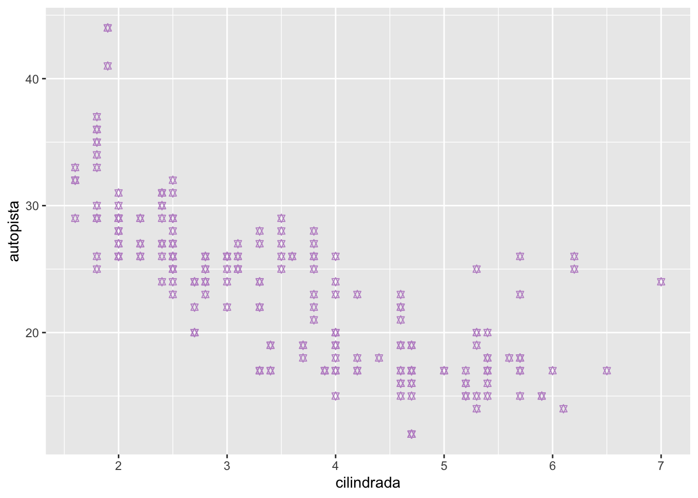
ggplot(data = millas) +
geom_point(mapping = aes(x = cilindrada, y = autopista), color = "blue")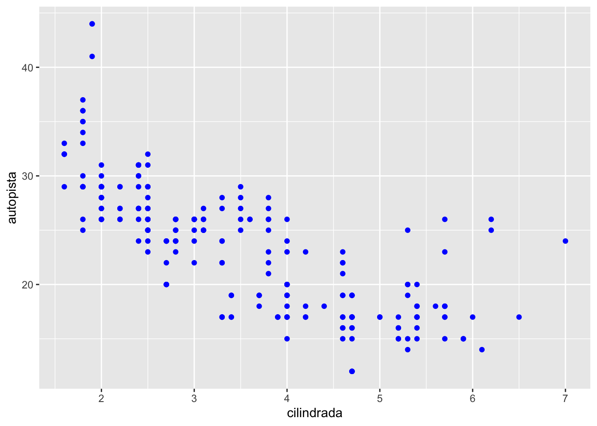
ggsave("cilindro_milla.jpg") #. png, .tiffmillas| fabricante | modelo | cilindrada | anio | cilindros | transmision | traccion | ciudad | autopista | combustible | clase |
|---|---|---|---|---|---|---|---|---|---|---|
| audi | a4 | 1.8 | 1999 | 4 | auto(l5) | d | 18 | 29 | p | compacto |
| audi | a4 | 1.8 | 1999 | 4 | manual(m5) | d | 21 | 29 | p | compacto |
| audi | a4 | 2 | 2008 | 4 | manual(m6) | d | 20 | 31 | p | compacto |
| audi | a4 | 2 | 2008 | 4 | auto(av) | d | 21 | 30 | p | compacto |
| audi | a4 | 2.8 | 1999 | 6 | auto(l5) | d | 16 | 26 | p | compacto |
| audi | a4 | 2.8 | 1999 | 6 | manual(m5) | d | 18 | 26 | p | compacto |
| audi | a4 | 3.1 | 2008 | 6 | auto(av) | d | 18 | 27 | p | compacto |
| audi | a4 quattro | 1.8 | 1999 | 4 | manual(m5) | 4 | 18 | 26 | p | compacto |
| audi | a4 quattro | 1.8 | 1999 | 4 | auto(l5) | 4 | 16 | 25 | p | compacto |
| audi | a4 quattro | 2 | 2008 | 4 | manual(m6) | 4 | 20 | 28 | p | compacto |
| audi | a4 quattro | 2 | 2008 | 4 | auto(s6) | 4 | 19 | 27 | p | compacto |
| audi | a4 quattro | 2.8 | 1999 | 6 | auto(l5) | 4 | 15 | 25 | p | compacto |
| audi | a4 quattro | 2.8 | 1999 | 6 | manual(m5) | 4 | 17 | 25 | p | compacto |
| audi | a4 quattro | 3.1 | 2008 | 6 | auto(s6) | 4 | 17 | 25 | p | compacto |
| audi | a4 quattro | 3.1 | 2008 | 6 | manual(m6) | 4 | 15 | 25 | p | compacto |
| audi | a6 quattro | 2.8 | 1999 | 6 | auto(l5) | 4 | 15 | 24 | p | mediano |
| audi | a6 quattro | 3.1 | 2008 | 6 | auto(s6) | 4 | 17 | 25 | p | mediano |
| audi | a6 quattro | 4.2 | 2008 | 8 | auto(s6) | 4 | 16 | 23 | p | mediano |
| chevrolet | c1500 suburban 2wd | 5.3 | 2008 | 8 | auto(l4) | t | 14 | 20 | r | suv |
| chevrolet | c1500 suburban 2wd | 5.3 | 2008 | 8 | auto(l4) | t | 11 | 15 | e | suv |
| chevrolet | c1500 suburban 2wd | 5.3 | 2008 | 8 | auto(l4) | t | 14 | 20 | r | suv |
| chevrolet | c1500 suburban 2wd | 5.7 | 1999 | 8 | auto(l4) | t | 13 | 17 | r | suv |
| chevrolet | c1500 suburban 2wd | 6 | 2008 | 8 | auto(l4) | t | 12 | 17 | r | suv |
| chevrolet | corvette | 5.7 | 1999 | 8 | manual(m6) | t | 16 | 26 | p | 2asientos |
| chevrolet | corvette | 5.7 | 1999 | 8 | auto(l4) | t | 15 | 23 | p | 2asientos |
| chevrolet | corvette | 6.2 | 2008 | 8 | manual(m6) | t | 16 | 26 | p | 2asientos |
| chevrolet | corvette | 6.2 | 2008 | 8 | auto(s6) | t | 15 | 25 | p | 2asientos |
| chevrolet | corvette | 7 | 2008 | 8 | manual(m6) | t | 15 | 24 | p | 2asientos |
| chevrolet | k1500 tahoe 4wd | 5.3 | 2008 | 8 | auto(l4) | 4 | 14 | 19 | r | suv |
| chevrolet | k1500 tahoe 4wd | 5.3 | 2008 | 8 | auto(l4) | 4 | 11 | 14 | e | suv |
| chevrolet | k1500 tahoe 4wd | 5.7 | 1999 | 8 | auto(l4) | 4 | 11 | 15 | r | suv |
| chevrolet | k1500 tahoe 4wd | 6.5 | 1999 | 8 | auto(l4) | 4 | 14 | 17 | d | suv |
| chevrolet | malibu | 2.4 | 1999 | 4 | auto(l4) | d | 19 | 27 | r | mediano |
| chevrolet | malibu | 2.4 | 2008 | 4 | auto(l4) | d | 22 | 30 | r | mediano |
| chevrolet | malibu | 3.1 | 1999 | 6 | auto(l4) | d | 18 | 26 | r | mediano |
| chevrolet | malibu | 3.5 | 2008 | 6 | auto(l4) | d | 18 | 29 | r | mediano |
| chevrolet | malibu | 3.6 | 2008 | 6 | auto(s6) | d | 17 | 26 | r | mediano |
| dodge | caravan 2wd | 2.4 | 1999 | 4 | auto(l3) | d | 18 | 24 | r | minivan |
| dodge | caravan 2wd | 3 | 1999 | 6 | auto(l4) | d | 17 | 24 | r | minivan |
| dodge | caravan 2wd | 3.3 | 1999 | 6 | auto(l4) | d | 16 | 22 | r | minivan |
| dodge | caravan 2wd | 3.3 | 1999 | 6 | auto(l4) | d | 16 | 22 | r | minivan |
| dodge | caravan 2wd | 3.3 | 2008 | 6 | auto(l4) | d | 17 | 24 | r | minivan |
| dodge | caravan 2wd | 3.3 | 2008 | 6 | auto(l4) | d | 17 | 24 | r | minivan |
| dodge | caravan 2wd | 3.3 | 2008 | 6 | auto(l4) | d | 11 | 17 | e | minivan |
| dodge | caravan 2wd | 3.8 | 1999 | 6 | auto(l4) | d | 15 | 22 | r | minivan |
| dodge | caravan 2wd | 3.8 | 1999 | 6 | auto(l4) | d | 15 | 21 | r | minivan |
| dodge | caravan 2wd | 3.8 | 2008 | 6 | auto(l6) | d | 16 | 23 | r | minivan |
| dodge | caravan 2wd | 4 | 2008 | 6 | auto(l6) | d | 16 | 23 | r | minivan |
| dodge | dakota pickup 4wd | 3.7 | 2008 | 6 | manual(m6) | 4 | 15 | 19 | r | pickup |
| dodge | dakota pickup 4wd | 3.7 | 2008 | 6 | auto(l4) | 4 | 14 | 18 | r | pickup |
| dodge | dakota pickup 4wd | 3.9 | 1999 | 6 | auto(l4) | 4 | 13 | 17 | r | pickup |
| dodge | dakota pickup 4wd | 3.9 | 1999 | 6 | manual(m5) | 4 | 14 | 17 | r | pickup |
| dodge | dakota pickup 4wd | 4.7 | 2008 | 8 | auto(l5) | 4 | 14 | 19 | r | pickup |
| dodge | dakota pickup 4wd | 4.7 | 2008 | 8 | auto(l5) | 4 | 14 | 19 | r | pickup |
| dodge | dakota pickup 4wd | 4.7 | 2008 | 8 | auto(l5) | 4 | 9 | 12 | e | pickup |
| dodge | dakota pickup 4wd | 5.2 | 1999 | 8 | manual(m5) | 4 | 11 | 17 | r | pickup |
| dodge | dakota pickup 4wd | 5.2 | 1999 | 8 | auto(l4) | 4 | 11 | 15 | r | pickup |
| dodge | durango 4wd | 3.9 | 1999 | 6 | auto(l4) | 4 | 13 | 17 | r | suv |
| dodge | durango 4wd | 4.7 | 2008 | 8 | auto(l5) | 4 | 13 | 17 | r | suv |
| dodge | durango 4wd | 4.7 | 2008 | 8 | auto(l5) | 4 | 9 | 12 | e | suv |
| dodge | durango 4wd | 4.7 | 2008 | 8 | auto(l5) | 4 | 13 | 17 | r | suv |
| dodge | durango 4wd | 5.2 | 1999 | 8 | auto(l4) | 4 | 11 | 16 | r | suv |
| dodge | durango 4wd | 5.7 | 2008 | 8 | auto(l5) | 4 | 13 | 18 | r | suv |
| dodge | durango 4wd | 5.9 | 1999 | 8 | auto(l4) | 4 | 11 | 15 | r | suv |
| dodge | ram 1500 pickup 4wd | 4.7 | 2008 | 8 | manual(m6) | 4 | 12 | 16 | r | pickup |
| dodge | ram 1500 pickup 4wd | 4.7 | 2008 | 8 | auto(l5) | 4 | 9 | 12 | e | pickup |
| dodge | ram 1500 pickup 4wd | 4.7 | 2008 | 8 | auto(l5) | 4 | 13 | 17 | r | pickup |
| dodge | ram 1500 pickup 4wd | 4.7 | 2008 | 8 | auto(l5) | 4 | 13 | 17 | r | pickup |
| dodge | ram 1500 pickup 4wd | 4.7 | 2008 | 8 | manual(m6) | 4 | 12 | 16 | r | pickup |
| dodge | ram 1500 pickup 4wd | 4.7 | 2008 | 8 | manual(m6) | 4 | 9 | 12 | e | pickup |
| dodge | ram 1500 pickup 4wd | 5.2 | 1999 | 8 | auto(l4) | 4 | 11 | 15 | r | pickup |
| dodge | ram 1500 pickup 4wd | 5.2 | 1999 | 8 | manual(m5) | 4 | 11 | 16 | r | pickup |
| dodge | ram 1500 pickup 4wd | 5.7 | 2008 | 8 | auto(l5) | 4 | 13 | 17 | r | pickup |
| dodge | ram 1500 pickup 4wd | 5.9 | 1999 | 8 | auto(l4) | 4 | 11 | 15 | r | pickup |
| ford | expedition 2wd | 4.6 | 1999 | 8 | auto(l4) | t | 11 | 17 | r | suv |
| ford | expedition 2wd | 5.4 | 1999 | 8 | auto(l4) | t | 11 | 17 | r | suv |
| ford | expedition 2wd | 5.4 | 2008 | 8 | auto(l6) | t | 12 | 18 | r | suv |
| ford | explorer 4wd | 4 | 1999 | 6 | auto(l5) | 4 | 14 | 17 | r | suv |
| ford | explorer 4wd | 4 | 1999 | 6 | manual(m5) | 4 | 15 | 19 | r | suv |
| ford | explorer 4wd | 4 | 1999 | 6 | auto(l5) | 4 | 14 | 17 | r | suv |
| ford | explorer 4wd | 4 | 2008 | 6 | auto(l5) | 4 | 13 | 19 | r | suv |
| ford | explorer 4wd | 4.6 | 2008 | 8 | auto(l6) | 4 | 13 | 19 | r | suv |
| ford | explorer 4wd | 5 | 1999 | 8 | auto(l4) | 4 | 13 | 17 | r | suv |
| ford | f150 pickup 4wd | 4.2 | 1999 | 6 | auto(l4) | 4 | 14 | 17 | r | pickup |
| ford | f150 pickup 4wd | 4.2 | 1999 | 6 | manual(m5) | 4 | 14 | 17 | r | pickup |
| ford | f150 pickup 4wd | 4.6 | 1999 | 8 | manual(m5) | 4 | 13 | 16 | r | pickup |
| ford | f150 pickup 4wd | 4.6 | 1999 | 8 | auto(l4) | 4 | 13 | 16 | r | pickup |
| ford | f150 pickup 4wd | 4.6 | 2008 | 8 | auto(l4) | 4 | 13 | 17 | r | pickup |
| ford | f150 pickup 4wd | 5.4 | 1999 | 8 | auto(l4) | 4 | 11 | 15 | r | pickup |
| ford | f150 pickup 4wd | 5.4 | 2008 | 8 | auto(l4) | 4 | 13 | 17 | r | pickup |
| ford | mustang | 3.8 | 1999 | 6 | manual(m5) | t | 18 | 26 | r | subcompacto |
| ford | mustang | 3.8 | 1999 | 6 | auto(l4) | t | 18 | 25 | r | subcompacto |
| ford | mustang | 4 | 2008 | 6 | manual(m5) | t | 17 | 26 | r | subcompacto |
| ford | mustang | 4 | 2008 | 6 | auto(l5) | t | 16 | 24 | r | subcompacto |
| ford | mustang | 4.6 | 1999 | 8 | auto(l4) | t | 15 | 21 | r | subcompacto |
| ford | mustang | 4.6 | 1999 | 8 | manual(m5) | t | 15 | 22 | r | subcompacto |
| ford | mustang | 4.6 | 2008 | 8 | manual(m5) | t | 15 | 23 | r | subcompacto |
| ford | mustang | 4.6 | 2008 | 8 | auto(l5) | t | 15 | 22 | r | subcompacto |
| ford | mustang | 5.4 | 2008 | 8 | manual(m6) | t | 14 | 20 | p | subcompacto |
| honda | civic | 1.6 | 1999 | 4 | manual(m5) | d | 28 | 33 | r | subcompacto |
| honda | civic | 1.6 | 1999 | 4 | auto(l4) | d | 24 | 32 | r | subcompacto |
| honda | civic | 1.6 | 1999 | 4 | manual(m5) | d | 25 | 32 | r | subcompacto |
| honda | civic | 1.6 | 1999 | 4 | manual(m5) | d | 23 | 29 | p | subcompacto |
| honda | civic | 1.6 | 1999 | 4 | auto(l4) | d | 24 | 32 | r | subcompacto |
| honda | civic | 1.8 | 2008 | 4 | manual(m5) | d | 26 | 34 | r | subcompacto |
| honda | civic | 1.8 | 2008 | 4 | auto(l5) | d | 25 | 36 | r | subcompacto |
| honda | civic | 1.8 | 2008 | 4 | auto(l5) | d | 24 | 36 | g | subcompacto |
| honda | civic | 2 | 2008 | 4 | manual(m6) | d | 21 | 29 | p | subcompacto |
| hyundai | sonata | 2.4 | 1999 | 4 | auto(l4) | d | 18 | 26 | r | mediano |
| hyundai | sonata | 2.4 | 1999 | 4 | manual(m5) | d | 18 | 27 | r | mediano |
| hyundai | sonata | 2.4 | 2008 | 4 | auto(l4) | d | 21 | 30 | r | mediano |
| hyundai | sonata | 2.4 | 2008 | 4 | manual(m5) | d | 21 | 31 | r | mediano |
| hyundai | sonata | 2.5 | 1999 | 6 | auto(l4) | d | 18 | 26 | r | mediano |
| hyundai | sonata | 2.5 | 1999 | 6 | manual(m5) | d | 18 | 26 | r | mediano |
| hyundai | sonata | 3.3 | 2008 | 6 | auto(l5) | d | 19 | 28 | r | mediano |
| hyundai | tiburon | 2 | 1999 | 4 | auto(l4) | d | 19 | 26 | r | subcompacto |
| hyundai | tiburon | 2 | 1999 | 4 | manual(m5) | d | 19 | 29 | r | subcompacto |
| hyundai | tiburon | 2 | 2008 | 4 | manual(m5) | d | 20 | 28 | r | subcompacto |
| hyundai | tiburon | 2 | 2008 | 4 | auto(l4) | d | 20 | 27 | r | subcompacto |
| hyundai | tiburon | 2.7 | 2008 | 6 | auto(l4) | d | 17 | 24 | r | subcompacto |
| hyundai | tiburon | 2.7 | 2008 | 6 | manual(m6) | d | 16 | 24 | r | subcompacto |
| hyundai | tiburon | 2.7 | 2008 | 6 | manual(m5) | d | 17 | 24 | r | subcompacto |
| jeep | grand cherokee 4wd | 3 | 2008 | 6 | auto(l5) | 4 | 17 | 22 | d | suv |
| jeep | grand cherokee 4wd | 3.7 | 2008 | 6 | auto(l5) | 4 | 15 | 19 | r | suv |
| jeep | grand cherokee 4wd | 4 | 1999 | 6 | auto(l4) | 4 | 15 | 20 | r | suv |
| jeep | grand cherokee 4wd | 4.7 | 1999 | 8 | auto(l4) | 4 | 14 | 17 | r | suv |
| jeep | grand cherokee 4wd | 4.7 | 2008 | 8 | auto(l5) | 4 | 9 | 12 | e | suv |
| jeep | grand cherokee 4wd | 4.7 | 2008 | 8 | auto(l5) | 4 | 14 | 19 | r | suv |
| jeep | grand cherokee 4wd | 5.7 | 2008 | 8 | auto(l5) | 4 | 13 | 18 | r | suv |
| jeep | grand cherokee 4wd | 6.1 | 2008 | 8 | auto(l5) | 4 | 11 | 14 | p | suv |
| land rover | range rover | 4 | 1999 | 8 | auto(l4) | 4 | 11 | 15 | p | suv |
| land rover | range rover | 4.2 | 2008 | 8 | auto(s6) | 4 | 12 | 18 | r | suv |
| land rover | range rover | 4.4 | 2008 | 8 | auto(s6) | 4 | 12 | 18 | r | suv |
| land rover | range rover | 4.6 | 1999 | 8 | auto(l4) | 4 | 11 | 15 | p | suv |
| lincoln | navigator 2wd | 5.4 | 1999 | 8 | auto(l4) | t | 11 | 17 | r | suv |
| lincoln | navigator 2wd | 5.4 | 1999 | 8 | auto(l4) | t | 11 | 16 | p | suv |
| lincoln | navigator 2wd | 5.4 | 2008 | 8 | auto(l6) | t | 12 | 18 | r | suv |
| mercury | mountaineer 4wd | 4 | 1999 | 6 | auto(l5) | 4 | 14 | 17 | r | suv |
| mercury | mountaineer 4wd | 4 | 2008 | 6 | auto(l5) | 4 | 13 | 19 | r | suv |
| mercury | mountaineer 4wd | 4.6 | 2008 | 8 | auto(l6) | 4 | 13 | 19 | r | suv |
| mercury | mountaineer 4wd | 5 | 1999 | 8 | auto(l4) | 4 | 13 | 17 | r | suv |
| nissan | altima | 2.4 | 1999 | 4 | manual(m5) | d | 21 | 29 | r | compacto |
| nissan | altima | 2.4 | 1999 | 4 | auto(l4) | d | 19 | 27 | r | compacto |
| nissan | altima | 2.5 | 2008 | 4 | auto(av) | d | 23 | 31 | r | mediano |
| nissan | altima | 2.5 | 2008 | 4 | manual(m6) | d | 23 | 32 | r | mediano |
| nissan | altima | 3.5 | 2008 | 6 | manual(m6) | d | 19 | 27 | p | mediano |
| nissan | altima | 3.5 | 2008 | 6 | auto(av) | d | 19 | 26 | p | mediano |
| nissan | maxima | 3 | 1999 | 6 | auto(l4) | d | 18 | 26 | r | mediano |
| nissan | maxima | 3 | 1999 | 6 | manual(m5) | d | 19 | 25 | r | mediano |
| nissan | maxima | 3.5 | 2008 | 6 | auto(av) | d | 19 | 25 | p | mediano |
| nissan | pathfinder 4wd | 3.3 | 1999 | 6 | auto(l4) | 4 | 14 | 17 | r | suv |
| nissan | pathfinder 4wd | 3.3 | 1999 | 6 | manual(m5) | 4 | 15 | 17 | r | suv |
| nissan | pathfinder 4wd | 4 | 2008 | 6 | auto(l5) | 4 | 14 | 20 | p | suv |
| nissan | pathfinder 4wd | 5.6 | 2008 | 8 | auto(s5) | 4 | 12 | 18 | p | suv |
| pontiac | grand prix | 3.1 | 1999 | 6 | auto(l4) | d | 18 | 26 | r | mediano |
| pontiac | grand prix | 3.8 | 1999 | 6 | auto(l4) | d | 16 | 26 | p | mediano |
| pontiac | grand prix | 3.8 | 1999 | 6 | auto(l4) | d | 17 | 27 | r | mediano |
| pontiac | grand prix | 3.8 | 2008 | 6 | auto(l4) | d | 18 | 28 | r | mediano |
| pontiac | grand prix | 5.3 | 2008 | 8 | auto(s4) | d | 16 | 25 | p | mediano |
| subaru | forester awd | 2.5 | 1999 | 4 | manual(m5) | 4 | 18 | 25 | r | suv |
| subaru | forester awd | 2.5 | 1999 | 4 | auto(l4) | 4 | 18 | 24 | r | suv |
| subaru | forester awd | 2.5 | 2008 | 4 | manual(m5) | 4 | 20 | 27 | r | suv |
| subaru | forester awd | 2.5 | 2008 | 4 | manual(m5) | 4 | 19 | 25 | p | suv |
| subaru | forester awd | 2.5 | 2008 | 4 | auto(l4) | 4 | 20 | 26 | r | suv |
| subaru | forester awd | 2.5 | 2008 | 4 | auto(l4) | 4 | 18 | 23 | p | suv |
| subaru | impreza awd | 2.2 | 1999 | 4 | auto(l4) | 4 | 21 | 26 | r | subcompacto |
| subaru | impreza awd | 2.2 | 1999 | 4 | manual(m5) | 4 | 19 | 26 | r | subcompacto |
| subaru | impreza awd | 2.5 | 1999 | 4 | manual(m5) | 4 | 19 | 26 | r | subcompacto |
| subaru | impreza awd | 2.5 | 1999 | 4 | auto(l4) | 4 | 19 | 26 | r | subcompacto |
| subaru | impreza awd | 2.5 | 2008 | 4 | auto(s4) | 4 | 20 | 25 | p | compacto |
| subaru | impreza awd | 2.5 | 2008 | 4 | auto(s4) | 4 | 20 | 27 | r | compacto |
| subaru | impreza awd | 2.5 | 2008 | 4 | manual(m5) | 4 | 19 | 25 | p | compacto |
| subaru | impreza awd | 2.5 | 2008 | 4 | manual(m5) | 4 | 20 | 27 | r | compacto |
| toyota | 4runner 4wd | 2.7 | 1999 | 4 | manual(m5) | 4 | 15 | 20 | r | suv |
| toyota | 4runner 4wd | 2.7 | 1999 | 4 | auto(l4) | 4 | 16 | 20 | r | suv |
| toyota | 4runner 4wd | 3.4 | 1999 | 6 | auto(l4) | 4 | 15 | 19 | r | suv |
| toyota | 4runner 4wd | 3.4 | 1999 | 6 | manual(m5) | 4 | 15 | 17 | r | suv |
| toyota | 4runner 4wd | 4 | 2008 | 6 | auto(l5) | 4 | 16 | 20 | r | suv |
| toyota | 4runner 4wd | 4.7 | 2008 | 8 | auto(l5) | 4 | 14 | 17 | r | suv |
| toyota | camry | 2.2 | 1999 | 4 | manual(m5) | d | 21 | 29 | r | mediano |
| toyota | camry | 2.2 | 1999 | 4 | auto(l4) | d | 21 | 27 | r | mediano |
| toyota | camry | 2.4 | 2008 | 4 | manual(m5) | d | 21 | 31 | r | mediano |
| toyota | camry | 2.4 | 2008 | 4 | auto(l5) | d | 21 | 31 | r | mediano |
| toyota | camry | 3 | 1999 | 6 | auto(l4) | d | 18 | 26 | r | mediano |
| toyota | camry | 3 | 1999 | 6 | manual(m5) | d | 18 | 26 | r | mediano |
| toyota | camry | 3.5 | 2008 | 6 | auto(s6) | d | 19 | 28 | r | mediano |
| toyota | camry solara | 2.2 | 1999 | 4 | auto(l4) | d | 21 | 27 | r | compacto |
| toyota | camry solara | 2.2 | 1999 | 4 | manual(m5) | d | 21 | 29 | r | compacto |
| toyota | camry solara | 2.4 | 2008 | 4 | manual(m5) | d | 21 | 31 | r | compacto |
| toyota | camry solara | 2.4 | 2008 | 4 | auto(s5) | d | 22 | 31 | r | compacto |
| toyota | camry solara | 3 | 1999 | 6 | auto(l4) | d | 18 | 26 | r | compacto |
| toyota | camry solara | 3 | 1999 | 6 | manual(m5) | d | 18 | 26 | r | compacto |
| toyota | camry solara | 3.3 | 2008 | 6 | auto(s5) | d | 18 | 27 | r | compacto |
| toyota | corolla | 1.8 | 1999 | 4 | auto(l3) | d | 24 | 30 | r | compacto |
| toyota | corolla | 1.8 | 1999 | 4 | auto(l4) | d | 24 | 33 | r | compacto |
| toyota | corolla | 1.8 | 1999 | 4 | manual(m5) | d | 26 | 35 | r | compacto |
| toyota | corolla | 1.8 | 2008 | 4 | manual(m5) | d | 28 | 37 | r | compacto |
| toyota | corolla | 1.8 | 2008 | 4 | auto(l4) | d | 26 | 35 | r | compacto |
| toyota | land cruiser wagon 4wd | 4.7 | 1999 | 8 | auto(l4) | 4 | 11 | 15 | r | suv |
| toyota | land cruiser wagon 4wd | 5.7 | 2008 | 8 | auto(s6) | 4 | 13 | 18 | r | suv |
| toyota | toyota tacoma 4wd | 2.7 | 1999 | 4 | manual(m5) | 4 | 15 | 20 | r | pickup |
| toyota | toyota tacoma 4wd | 2.7 | 1999 | 4 | auto(l4) | 4 | 16 | 20 | r | pickup |
| toyota | toyota tacoma 4wd | 2.7 | 2008 | 4 | manual(m5) | 4 | 17 | 22 | r | pickup |
| toyota | toyota tacoma 4wd | 3.4 | 1999 | 6 | manual(m5) | 4 | 15 | 17 | r | pickup |
| toyota | toyota tacoma 4wd | 3.4 | 1999 | 6 | auto(l4) | 4 | 15 | 19 | r | pickup |
| toyota | toyota tacoma 4wd | 4 | 2008 | 6 | manual(m6) | 4 | 15 | 18 | r | pickup |
| toyota | toyota tacoma 4wd | 4 | 2008 | 6 | auto(l5) | 4 | 16 | 20 | r | pickup |
| volkswagen | gti | 2 | 1999 | 4 | manual(m5) | d | 21 | 29 | r | compacto |
| volkswagen | gti | 2 | 1999 | 4 | auto(l4) | d | 19 | 26 | r | compacto |
| volkswagen | gti | 2 | 2008 | 4 | manual(m6) | d | 21 | 29 | p | compacto |
| volkswagen | gti | 2 | 2008 | 4 | auto(s6) | d | 22 | 29 | p | compacto |
| volkswagen | gti | 2.8 | 1999 | 6 | manual(m5) | d | 17 | 24 | r | compacto |
| volkswagen | jetta | 1.9 | 1999 | 4 | manual(m5) | d | 33 | 44 | d | compacto |
| volkswagen | jetta | 2 | 1999 | 4 | manual(m5) | d | 21 | 29 | r | compacto |
| volkswagen | jetta | 2 | 1999 | 4 | auto(l4) | d | 19 | 26 | r | compacto |
| volkswagen | jetta | 2 | 2008 | 4 | auto(s6) | d | 22 | 29 | p | compacto |
| volkswagen | jetta | 2 | 2008 | 4 | manual(m6) | d | 21 | 29 | p | compacto |
| volkswagen | jetta | 2.5 | 2008 | 5 | auto(s6) | d | 21 | 29 | r | compacto |
| volkswagen | jetta | 2.5 | 2008 | 5 | manual(m5) | d | 21 | 29 | r | compacto |
| volkswagen | jetta | 2.8 | 1999 | 6 | auto(l4) | d | 16 | 23 | r | compacto |
| volkswagen | jetta | 2.8 | 1999 | 6 | manual(m5) | d | 17 | 24 | r | compacto |
| volkswagen | new beetle | 1.9 | 1999 | 4 | manual(m5) | d | 35 | 44 | d | subcompacto |
| volkswagen | new beetle | 1.9 | 1999 | 4 | auto(l4) | d | 29 | 41 | d | subcompacto |
| volkswagen | new beetle | 2 | 1999 | 4 | manual(m5) | d | 21 | 29 | r | subcompacto |
| volkswagen | new beetle | 2 | 1999 | 4 | auto(l4) | d | 19 | 26 | r | subcompacto |
| volkswagen | new beetle | 2.5 | 2008 | 5 | manual(m5) | d | 20 | 28 | r | subcompacto |
| volkswagen | new beetle | 2.5 | 2008 | 5 | auto(s6) | d | 20 | 29 | r | subcompacto |
| volkswagen | passat | 1.8 | 1999 | 4 | manual(m5) | d | 21 | 29 | p | mediano |
| volkswagen | passat | 1.8 | 1999 | 4 | auto(l5) | d | 18 | 29 | p | mediano |
| volkswagen | passat | 2 | 2008 | 4 | auto(s6) | d | 19 | 28 | p | mediano |
| volkswagen | passat | 2 | 2008 | 4 | manual(m6) | d | 21 | 29 | p | mediano |
| volkswagen | passat | 2.8 | 1999 | 6 | auto(l5) | d | 16 | 26 | p | mediano |
| volkswagen | passat | 2.8 | 1999 | 6 | manual(m5) | d | 18 | 26 | p | mediano |
| volkswagen | passat | 3.6 | 2008 | 6 | auto(s6) | d | 17 | 26 | p | mediano |
Ejercicio para someter:
- baja el paquete “ggversa”
- activar el paquete “ggversa”
- mirar las variables del archivo en este paquete que se llama “Anolis”
- haga un gráfico que incluye lo siguiente
- en el eje de x = el SVL. que es el tamaño del lagarto del hocico a la cloaca y en la variable de “TAIL” en el eje de y.
- selecciona la variable “SEX_AGE” para color
- selecciona la función correcta para que cada “SEX_AGE” tenga su proprio gráfico
- salva el gráfico en .png o .jpg
- subir el gráfico aquí
library(ggversa)
head(Anolis)| STUDY | Survey_Site | LOCATION | TIME | DATE | SEASON | SPECIES | SEX_AGE | HEIGHT | DISTANCE_FROM_CENTERLINE | PERCH_SUBSTRATE | PERCH_DIAMETER | WEIGHT | SVL | TAIL |
|---|---|---|---|---|---|---|---|---|---|---|---|---|---|---|
| Mark/recap | North Tower | El Verde | 38760 | 3/13/92 0:00 | dry | Anolis stratulus | Female | 0 | 2.7 | ground | 6 | |||
| Mark/recap | Woods walkway tower | El Verde | 36900 | 2/20/89 0:00 | dry | Anolis stratulus | Juvenil | 0 | 2 | 29 | ||||
| Mark/recap | Woods walkway tower | El Verde | 40500 | 2/21/89 0:00 | dry | Anolis stratulus | Male | 0 | 1.4 | on root at base | 0 | |||
| Mark/recap | North Tower | El Verde | 39960 | 3/16/92 0:00 | dry | Anolis stratulus | Juvenil | 0.3 | 1 | tower | 30 | 7 | 26 | 3 |
| Mark/recap | North Tower | El Verde | 45060 | 3/11/92 0:00 | dry | Anolis stratulus | Male | 0.3 | 0.9 | tower | 5 | 2.4 | 45 | 71 |
| Mark/recap | North Tower | El Verde | 3600 | 3/9/92 0:00 | dry | Anolis stratulus | Female | 0.4 | 0.9 | tower | 5 | 1.6 | 37 | 58 |
ggplot(data = Anolis) +
geom_point(mapping = aes(x = SVL, y = TAIL, color=SEX_AGE))+
facet_wrap(~SEX_AGE, ncol=1)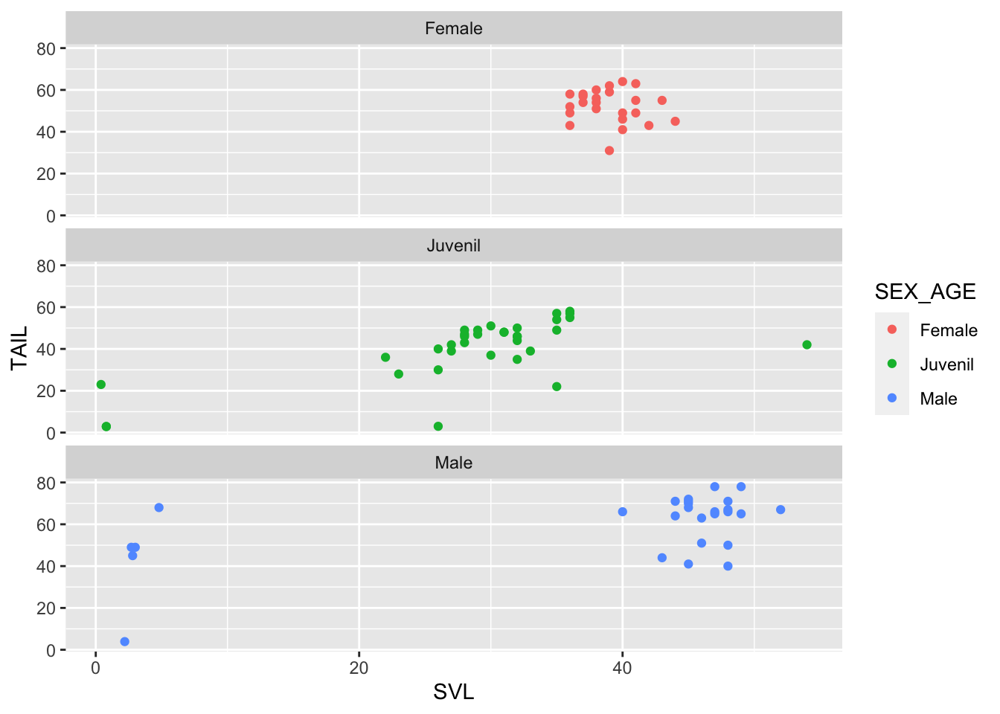
# izquierda
ggplot(data = millas) +
geom_point(mapping = aes(x = cilindrada, y = autopista))
# derecha LOESS
ggplot(data = millas) +
geom_smooth(method=lm,mapping = aes(x = cilindrada, y = autopista))+ # y = mx+b
geom_point( mapping = aes(x = cilindrada, y = autopista))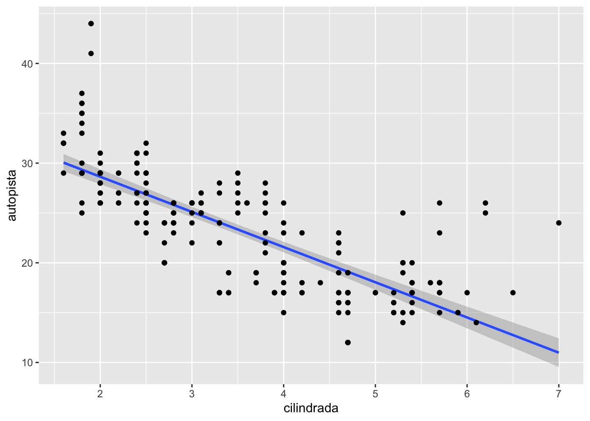
names(millas)## [1] "fabricante" "modelo" "cilindrada" "anio" "cilindros"
## [6] "transmision" "traccion" "ciudad" "autopista" "combustible"
## [11] "clase"ggplot(data = millas) +
geom_smooth(mapping = aes(x = cilindrada, y = autopista, linetype = clase, colour=clase))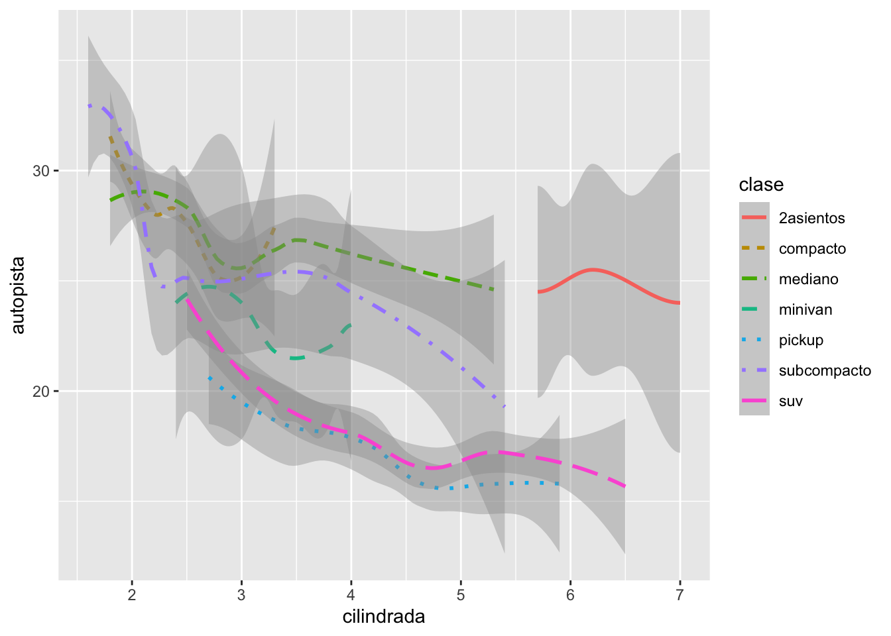
ggplot(data = millas, mapping = aes(x = cilindrada, y = autopista)) +
geom_point(mapping = aes(color = clase)) +
geom_smooth(data = filter(millas, clase == "suv"), se =TRUE)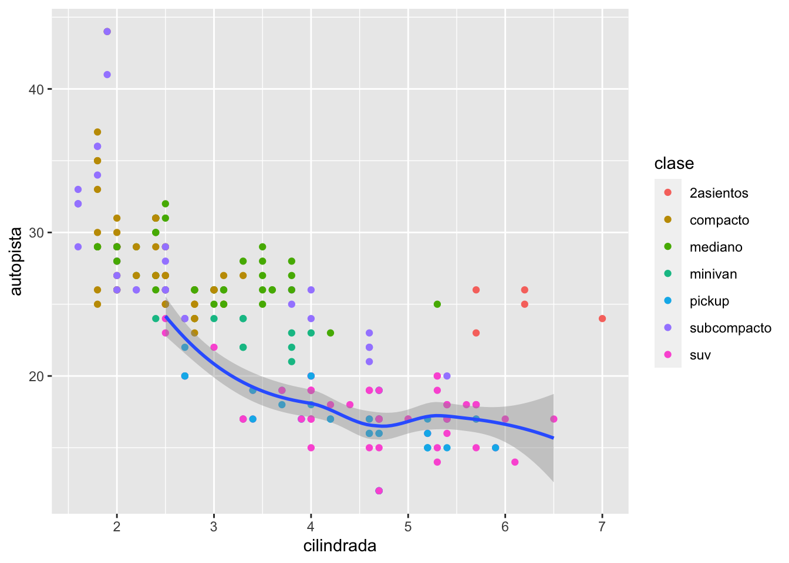
ggplot(data = millas, mapping = aes(x = cilindrada, y = autopista)) +
geom_point() +
geom_smooth()
ggplot() +
geom_point(data = millas, mapping = aes(x = cilindrada, y = autopista)) +
geom_smooth(data = millas, mapping = aes(x = cilindrada, y = autopista))
ggplot(data = millas, mapping = aes(x = cilindrada, y = autopista)) +
geom_point(mapping = aes(color = clase)) +
geom_smooth()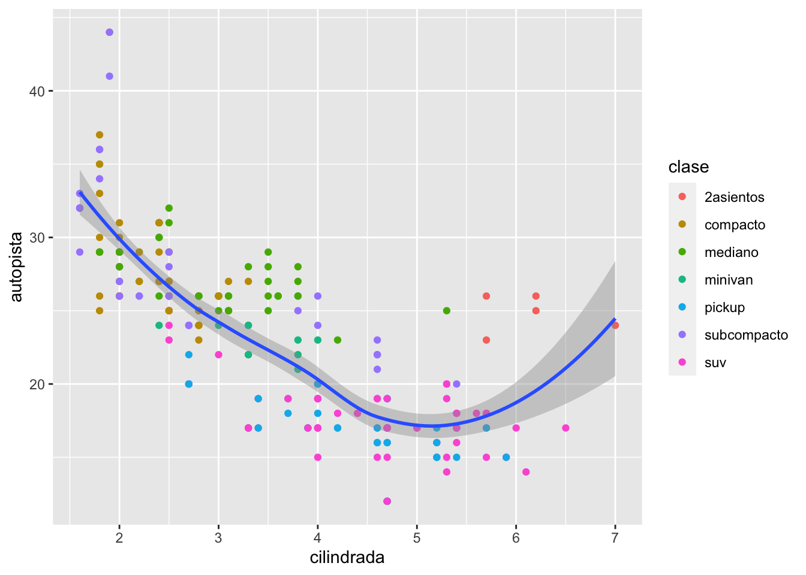
Transformación estadística
head(diamantes)| precio | quilate | corte | color | claridad | profundidad | tabla | x | y | z |
|---|---|---|---|---|---|---|---|---|---|
| 326 | 0.23 | Ideal | E | SI2 | 61.5 | 55 | 3.95 | 3.98 | 2.43 |
| 326 | 0.21 | Premium | E | SI1 | 59.8 | 61 | 3.89 | 3.84 | 2.31 |
| 327 | 0.23 | Bueno | E | VS1 | 56.9 | 65 | 4.05 | 4.07 | 2.31 |
| 334 | 0.29 | Premium | I | VS2 | 62.4 | 58 | 4.2 | 4.23 | 2.63 |
| 335 | 0.31 | Bueno | J | SI2 | 63.3 | 58 | 4.34 | 4.35 | 2.75 |
| 336 | 0.24 | Muy bueno | J | VVS2 | 62.8 | 57 | 3.94 | 3.96 | 2.48 |
nrow(diamantes)## [1] 53940ncol(diamantes)## [1] 10dim(diamantes)## [1] 53940 10max(diamantes$precio)## [1] 18823min(diamantes$precio)## [1] 326unique(diamantes$corte)## [1] Ideal Premium Bueno Muy bueno Regular
## Levels: Regular < Bueno < Muy bueno < Premium < Ideal#diamantes$corte
#diamantes$precioggplot(data = diamantes) +
geom_bar(mapping = aes(x = corte))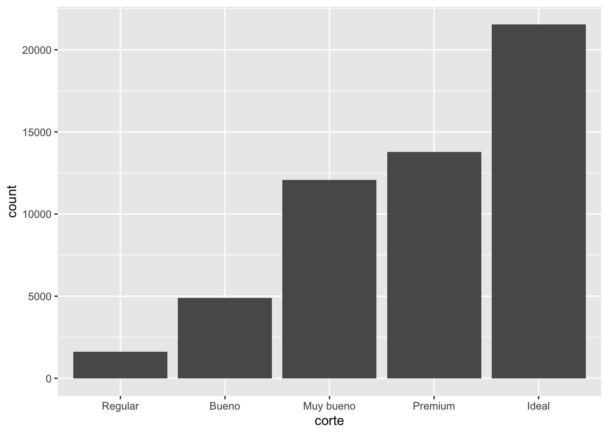
ggplot(data = diamantes) +
stat_summary(
mapping = aes(x = corte, y = profundidad),
fun.min = min,
fun.max = max,
fun = median
)
x=c(1:100, NA)
x## [1] 1 2 3 4 5 6 7 8 9 10 11 12 13 14 15 16 17 18
## [19] 19 20 21 22 23 24 25 26 27 28 29 30 31 32 33 34 35 36
## [37] 37 38 39 40 41 42 43 44 45 46 47 48 49 50 51 52 53 54
## [55] 55 56 57 58 59 60 61 62 63 64 65 66 67 68 69 70 71 72
## [73] 73 74 75 76 77 78 79 80 81 82 83 84 85 86 87 88 89 90
## [91] 91 92 93 94 95 96 97 98 99 100 NAmean(x, na.rm=TRUE)## [1] 50.5ggplot(data = millas, mapping = aes(x = clase, y = autopista)) +
geom_boxplot()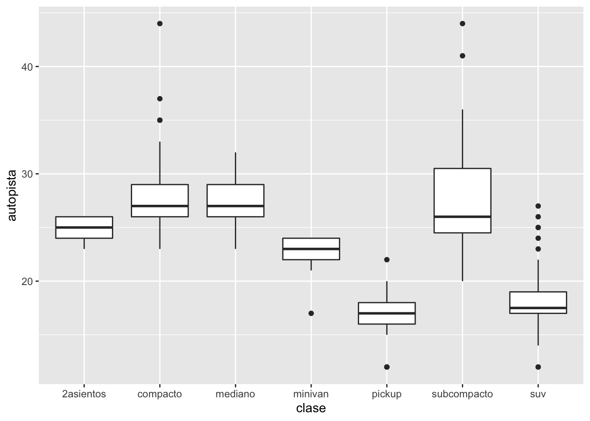
ggplot(data = millas, mapping = aes(x = clase, y = autopista)) +
geom_boxplot() +
coord_flip()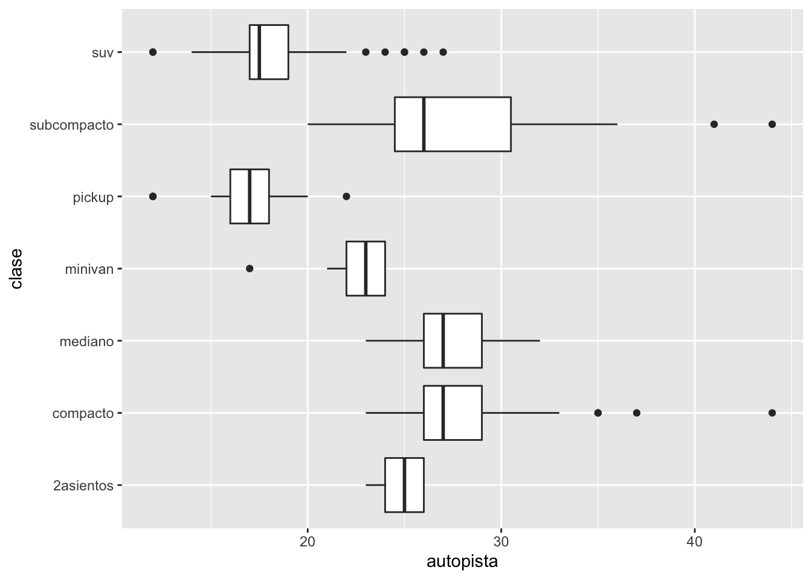
bar <- ggplot(data = diamantes) +
geom_bar(
mapping = aes(x = corte, fill = corte),
show.legend = FALSE,
width = 1
) +
theme(aspect.ratio = 1) +
labs(x = NULL, y = NULL)
bar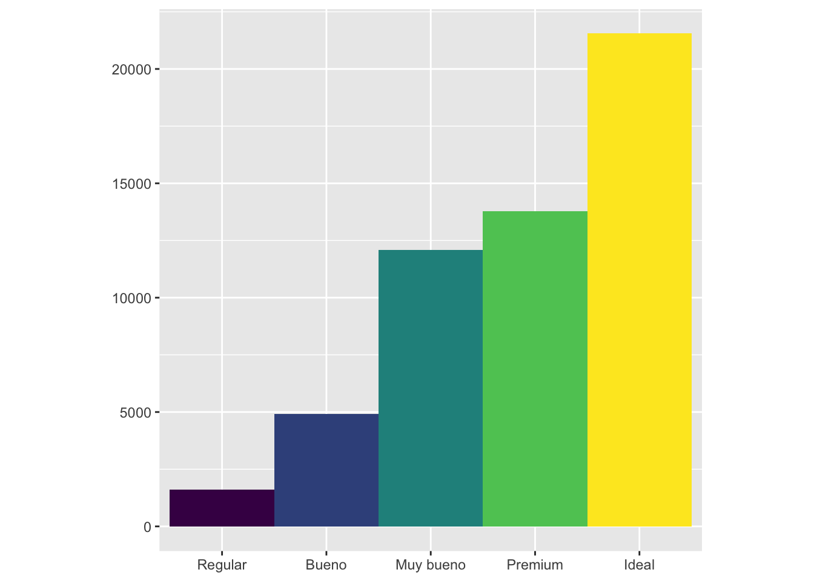
bar + coord_flip()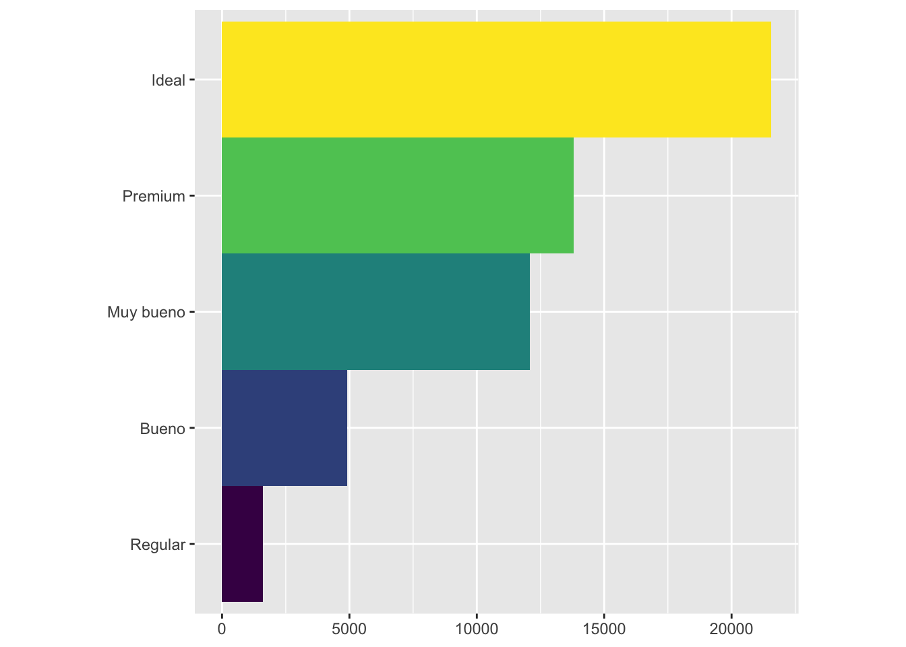
bar + coord_polar()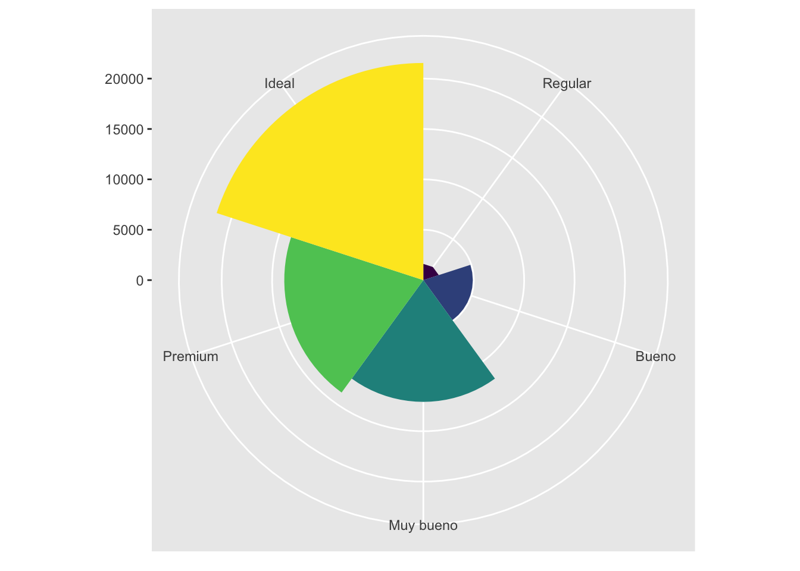
library(readr)
Vuelos_SJU_2018_Ene <- read_csv("Datos/Vuelos_SJU_2018_Ene.csv")
head(Vuelos_SJU_2018_Ene)| FL_DATE | OP_UNIQUE_CARRIER | ORIGIN | ORIGIN_CITY_NAME | ORIGIN_STATE_ABR | DEST | DEST_CITY_NAME | DEST_STATE_ABR | DEP_TIME | DEP_DELAY | CRS_ARR_TIME | ARR_TIME | ARR_DELAY | CANCELLED |
|---|---|---|---|---|---|---|---|---|---|---|---|---|---|
| 2/1/18 | NK | SJU | San Juan, PR | PR | MCO | Orlando, FL | FL | 1.5e+03 | -8 | 1.72e+03 | 1.71e+03 | -19 | 0 |
| 2/1/18 | AA | MIA | Miami, FL | FL | SJU | San Juan, PR | PR | 1.02e+03 | -4 | 1.36e+03 | 1.35e+03 | -7 | 0 |
| 2/1/18 | AA | SJU | San Juan, PR | PR | DFW | Dallas/Fort Worth, TX | TX | 1.43e+03 | 8 | 1.8e+03 | 1.81e+03 | 6 | 0 |
| 2/1/18 | AA | SJU | San Juan, PR | PR | MIA | Miami, FL | FL | 1.44e+03 | -3 | 1.64e+03 | 1.64e+03 | -2 | 0 |
| 2/1/18 | AA | SJU | San Juan, PR | PR | ORD | Chicago, IL | IL | 1.54e+03 | -8 | 1.92e+03 | 1.91e+03 | -11 | 0 |
| 2/1/18 | AA | MIA | Miami, FL | FL | SJU | San Juan, PR | PR | 704 | -1 | 1.04e+03 | 1.04e+03 | -4 | 0 |